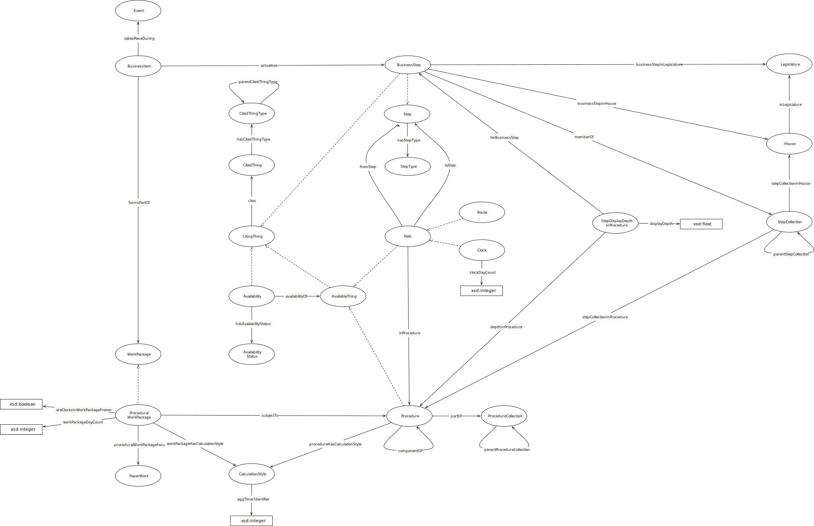

IRI: http://parliament.uk/ontologies/procedure/Actualisation
IRI: http://parliament.uk/ontologies/procedure/BusinessItem
IRI: http://parliament.uk/ontologies/procedure/House
IRI: http://parliament.uk/ontologies/procedure/Legislature
IRI: http://parliament.uk/ontologies/procedure/Procedure
IRI: http://parliament.uk/ontologies/procedure/Route
IRI: http://parliament.uk/ontologies/procedure/RouteAvailability
IRI: http://parliament.uk/ontologies/procedure/RouteAvailabilityStatus
IRI: http://parliament.uk/ontologies/procedure/Step
IRI: http://parliament.uk/ontologies/procedure/StepCollection
IRI: http://parliament.uk/ontologies/procedure/StepCollectionMembership
IRI: http://parliament.uk/ontologies/procedure/StepDisplayDepthInProcedure
IRI: http://parliament.uk/ontologies/procedure/StepType
IRI: http://parliament.uk/ontologies/procedure/WorkPackage
IRI: http://parliament.uk/ontologies/procedure/WorkPackageableThing
IRI: http://parliament.uk/ontologies/procedure/actualises
IRI: http://parliament.uk/ontologies/procedure/appearsInProcedure
IRI: http://parliament.uk/ontologies/procedure/componentOf
IRI: http://parliament.uk/ontologies/procedure/depthInProcedure
IRI: http://parliament.uk/ontologies/procedure/focus
IRI: http://parliament.uk/ontologies/procedure/forStep
IRI: http://parliament.uk/ontologies/procedure/formsPartOf
IRI: http://parliament.uk/ontologies/procedure/fromStep
IRI: http://parliament.uk/ontologies/procedure/hasAvailability
IRI: http://parliament.uk/ontologies/procedure/hasAvailabilityStatus
IRI: http://parliament.uk/ontologies/procedure/hasBusinessItem
IRI: http://parliament.uk/ontologies/procedure/hasMembership
IRI: http://parliament.uk/ontologies/procedure/hasProcedure
IRI: http://parliament.uk/ontologies/procedure/hasStepType
IRI: http://parliament.uk/ontologies/procedure/inLegislature
IRI: http://parliament.uk/ontologies/procedure/ofStepCollection
IRI: http://parliament.uk/ontologies/procedure/stepCollectionInHouse
IRI: http://parliament.uk/ontologies/procedure/stepInHouse
IRI: http://parliament.uk/ontologies/procedure/stepInLegislature
IRI: http://parliament.uk/ontologies/procedure/subjectTo
IRI: http://parliament.uk/ontologies/procedure/toStep
IRI: http://parliament.uk/ontologies/procedure/displayDepthValue
This HTML document was obtained by processing the OWL ontology source code through LODE, Live OWL Documentation Environment, developed by Silvio Peroni.